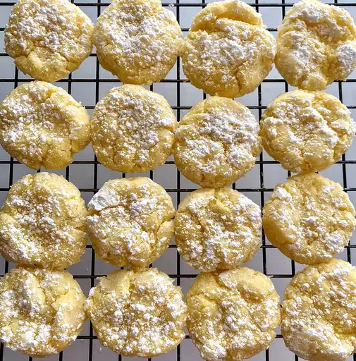

Gooey Butter Cookies

Description
These gooey butter cookies are sure to be a favorite if you like the cake by the same name. You won't be able to stop eating them!
Ingredients
- ¼ cup confectioners' sugar
- 1 (8 ounce) package cream cheese, softened
- ½ cup unsalted butter, softened
- 1 large egg
- ¼ teaspoon vanilla extract
- 1 (15.25 ounce package yellow cake mix
Steps
- Preheat the oven to 350°F (175°C). Place confectioners' sugar into a shallow bowl.
- Beat cream cheese and butter with an electric mixer in a medium bowl until creamy. Stir in egg and vanilla. Add cake mix and stir until well blended. Roll dough into 1-inch balls.
- Roll balls in confectioners' sugar to coat; place 1 inch apart onto an ungreased cookie sheet.
- Bake in the preheated oven until set, 10 to 13 minutes. Remove from the oven and transfer to wire racks to cool.